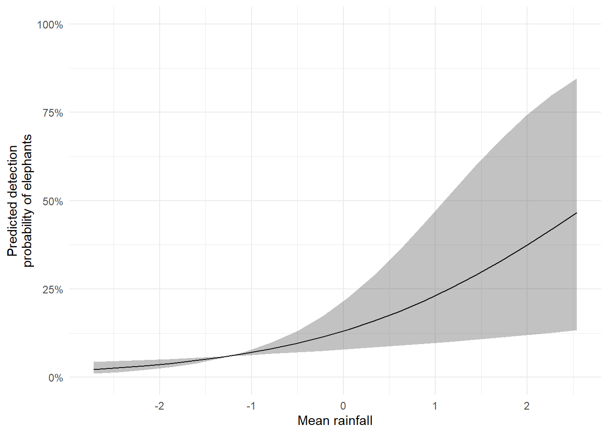

Code
library(spOccupancy)
library(ggplot2)
library(patchwork)R packagesAs before, this code uses spOccupancy, ggplot2 and patchwork for the analysis and visualisations.
library(spOccupancy)
library(ggplot2)
library(patchwork)In the previous document we went through a simple example to get a sense of how occupancy models work. We’re now going to begin the process of slowly increasing the complexity. To start, we’re going to need to include covariates (often called explanatory variables or independent variables or a wide variety of other names - it’s a mess).
Let’s revisit our simple occupancy model:
\[ z_i \sim Bernoulli(\psi_i)\\ \]
\[ logit(\psi_i) = \beta_0\\ \]
\[ y_{i,j} \sim Bernoulli(p_{i,j} \times z_i)\\ \]
\[ logit(p_{i,j}) = \alpha_0 \]
where the first two formula represent the state model (i.e. are our species present or absent from site \(i\)), and the last two form the detection model.
What we’re going to do in this section is to add in covariates to these equations, starting with the detection model.
The first thing to note is that \(y\) is indexed by both \(i\) and \(j\), where \(i\) was the site and \(j\) was the survey. That \(j\) is important because it allows us to specify covariates that vary not just by site (e.g. site 1 has 20 trees while site 2 has 10 trees) but by survey as well (e.g. on survey 1 in site 1, the temperature was 20 degrees, 15 degrees in survey 2 and 5 degrees in survey 3). This means that anything that was different in one survey to the next can be accounted for and included in the model (so long as we can measure it).
Specifically, these “survey varying covariates” are features that we think may have made us (or whoever or whatever collected the data) to be more or less effective. Using cameras? Well maybe the presence of fog has a big impact on how likely we are to detect elephants. Doing surveys yourself? Well maybe the hour of day that you did the survey had a big impact. The point is, we can include these variables that deal with differences in detection probability.
I’ll simulate a new dataset (with a bit more data for us to work with - 64 sites surveyed 3 times each) to show this off. We can say that the detection covariate in this case is rainfall, but note that the values for rainfall will be centred on zero (don’t worry about this).
Here’s what the data looks like:
set.seed(1234)
dat <- simOcc(J.x = 8,
J.y = 8,
n.rep = rep(3, times = 8 * 8),
beta = c(1),
alpha = c(-2, 0.5))
obs <- dat$y
det_cov <- dat$X.p[,,2]
df <- data.frame(
survey = rep(1:3, each = 64),
cov = c(det_cov[,1], det_cov[,2], det_cov[,3]),
y = c(obs[,1], obs[,2], obs[,3])
)
p1 <- ggplot(df) +
geom_boxplot(aes(x = factor(survey), y = cov)) +
geom_jitter(aes(x = factor(survey), y = cov),
width = 0.2, height = 0) +
labs(x = "Survey", y = "Rainfall") +
theme_minimal()
p2 <- ggplot(df) +
geom_jitter(aes(y = factor(y), x = cov),
alpha = 0.4, width = 0, height = 0.1) +
labs(x = "Rainfall", y = "Elephant detection") +
theme_minimal()
p1 + p2 + plot_annotation(tag_levels = "A", tag_suffix = ")")
Notice anything? In A) we can see that in each survey, there’s a lot of variation across the 64 sites in how much rainfall there was; maybe peaking in survey 2. In B), it looks like it might be more likely that we detect elephants more often when there’s more rainfall.
Are you sure there’s an influence? If so, how strong is it? Exactly how strong is it?
There’s no way you can answer those questions. That’s where we need stats. So let’s add in rainfall to our model. I’ll recycle the code from the previous document and include rainfall. Here’s how we do that.
Just like in the previous document, we need to include our different datasets into a list. If you’re still not sure what a list is in R, think of it like a folder on your computer. You can add lots of different files to a folder, but they’re all “tied” together by being within the same folder. That’s the same as a list in R.
Here, I’m going to do something seemingly strange. I’m going to create a list and include this into our etosha list. The reason is that we might have more than one detection covariate, so having a list, though redundant here, will make adding additional variables easier in the future.
# Note you wouldn't need to do the dat$X.p[,,2] bit
# That's just because the data is simulated.
det.covs <- list(rain = dat$X.p[,,2])
etosha <- list(
y = dat$y,
det.covs = det.covs
)And we’re good to go on to the modelling.
A few things to note in the R code;
occ.formula = ~ 1 is the equivalent to \(logit(\psi_{i,j}) = \beta_0\)
det.formula = ~ rain is the equivalent to \(logit(p_i) = \alpha_0 + \alpha_1 \times Rain_i\)
We specify that all data is contained in the list (i.e. “folder”) called etosha.
The remainder of the arguments (e.g. n.chains) can be ignored for now.
fit <- PGOcc(
# The state model (i.e. what % that elephants are present?)
# ~ 1 means we want an intercept only model (no covariates)
occ.formula = ~ 1,
# The observation model (i.e. what % that we see elephants if present?)
det.formula = ~ rain,
# Our carefully formatted dataset
data = etosha,
# Details to get the machinery to run that we'll ignore for now
n.chains = 4,
n.samples = 2000,
n.burn = 200,
verbose = FALSE)Having now fit the model to the data, we can see what we’ve learnt:
summary(fit)
Call:
PGOcc(occ.formula = ~1, det.formula = ~rain, data = etosha, n.samples = 2000,
verbose = FALSE, n.burn = 200, n.chains = 4)
Samples per Chain: 2000
Burn-in: 200
Thinning Rate: 1
Number of Chains: 4
Total Posterior Samples: 7200
<<<<<<< HEAD
Run Time (min): 0.017
=======
Run Time (min): 0.0152
>>>>>>> d548521aa3beeabf225108329da82b7c8eb947ac
Occurrence (logit scale):
Mean SD 2.5% 50% 97.5% Rhat ESS
(Intercept) 1.8753 0.9465 0.3078 1.772 4.0465 1.0516 349
Detection (logit scale):
Mean SD 2.5% 50% 97.5% Rhat ESS
(Intercept) -1.8872 0.2946 -2.4610 -1.8939 -1.2939 1.0165 1038
rain 0.6930 0.2384 0.2328 0.6877 1.1801 1.0025 2604Compared to the model in the previous document we now have additional information for Detection (logit scale); we have both an (Intercept) and rain. These are \(\alpha_0\) and \(\alpha_1\) from our detection model \(logit(p_i) = \alpha_0 + \alpha_1 \times Rain_i\). If we really wanted to, we could now replace the parameter labels (e.g. the \(\alpha\)s and \(\beta\)s) with their now estimated values which would look like (rounding the estimates to two decimal points arbitrarily):
\[ z_i \sim Bernoulli(\psi_i)\\\] $$
\[ logit(\psi_i) = 1.88\\ \]
\[ y_{i,j} \sim Bernoulli(p_{i,j} \times z_i)\\ \]
\[ logit(p_{i,j}) = -1.89 + 0.69 \times Rain_i \]
With this, we can swap out \(Rain\) for any value that we might be interested in, to see how our detection probability changes. For example, let’s see what happens when \(Rain = 1\).
-1.89 + 0.69 * 1[1] -1.2Our logit value is -1.2. How do we get that into probabilities that we can actually understand? Backtransform out of logit using plogis():
plogis(-1.89 + 0.69 * 1)[1] 0.2314752And we get a ca. 23% chance to detect an elephant when \(Rain = 1\). What about when \(Rain = 0\)? Well, we can do that easily enough now that we know thew general steps:
plogis(-1.89 + 0.69 * 0)[1] 0.1312445When \(Rain = 0\), we predict a ca. 13% chance to detect elephants.
This approach, whereby we make a prediction for a specific value of \(Rain\) can be extended into making multiple predictions at once, such that we can then draw a line through them. Here’s how we’d do that.
We start by creating a sequence of \(Rain\) values, rather than doing one a time. Here we use the seq() function to create a sequence, which will range from the minimum \(Rain\) value to the maximum within our dataset. The number of values that we want in this sequence is specified as 20 but we can choose any value here - we just need enough that the line is drawn “accurately”.
rain <- seq(from = min(det.covs$rain),
to = max(det.covs$rain),
length.out = 20)
rain [1] -2.71815687 -2.44127881 -2.16440076 -1.88752271 -1.61064465 -1.33376660
[7] -1.05688855 -0.78001049 -0.50313244 -0.22625439 0.05062367 0.32750172
[13] 0.60437977 0.88125783 1.15813588 1.43501393 1.71189199 1.98877004
[19] 2.26564809 2.54252615Now we have our values, we don’t want to manually enter each value into our equation. Instead we can use the fact that R works with vectors (i.e. columns of data) to do this quickly and easily:
pred <- plogis(-1.89 + 0.69 * rain)
pred [1] 0.02263134 0.02726568 0.03281714 0.03945308 0.04736516 0.05677017
[7] 0.06790956 0.08104689 0.09646267 0.11444547 0.13527876 0.15922259
[13] 0.18649040 0.21722152 0.25145143 0.28908330 0.32986526 0.37337882
[19] 0.41904309 0.46613767Now for each value of rain, we have the predicted probability of detecting an elephant. Useful but you wouldn’t want to throw these two columns at your audience/reader and expect them to make sense of it. It’d be better if we include these in a figure.
To do so, we’ll combine both columns into a single dataset and plot using ggplot2:
df <- data.frame(
pred,
rain
)
ggplot(df) +
geom_line(aes(x = rain, y = pred))
From this figure it now appears much more intuitive that increasing rain makes elephants easier to detect. We can do a little “tidying” of the figure to make it more visually pleasing:
ggplot(df) +
geom_line(aes(x = rain, y = pred)) +
scale_y_continuous(labels = scales::percent,
limits = c(0,1)) +
theme_minimal() +
labs(x = "Mean rainfall",
y = "Predicted detection\nprobability of elephants")
The above figure is a good start but we’re missing any measure of uncertainty. If we were doing frequentist statistics, we would use 95% confidence intervals but these are exclusively frequentist. There are no 95% confidence intervals when we use the Bayesian statistical framework. Instead we have credible intervals. I’ll explain the Bayesian framework in a subsequent workflow but for now here is the formal definition of a credible interval:
There is a 95% probability that the True parameter value lies within the interval range, given the data and model.
This is in contrast with the frequentist confidence interval whose formal definition is so bizarre and unintuitive that it’s barely useful. 95% credible intervals are useful and work exactly the way people think frequentist intervals work.
But how do we include these in the figure? Well, the model summary makes it easy to find the values:
summary(fit)
Call:
PGOcc(occ.formula = ~1, det.formula = ~rain, data = etosha, n.samples = 2000,
verbose = FALSE, n.burn = 200, n.chains = 4)
Samples per Chain: 2000
Burn-in: 200
Thinning Rate: 1
Number of Chains: 4
Total Posterior Samples: 7200
<<<<<<< HEAD
Run Time (min): 0.017
=======
Run Time (min): 0.0152
>>>>>>> d548521aa3beeabf225108329da82b7c8eb947ac
Occurrence (logit scale):
Mean SD 2.5% 50% 97.5% Rhat ESS
(Intercept) 1.8753 0.9465 0.3078 1.772 4.0465 1.0516 349
Detection (logit scale):
Mean SD 2.5% 50% 97.5% Rhat ESS
(Intercept) -1.8872 0.2946 -2.4610 -1.8939 -1.2939 1.0165 1038
rain 0.6930 0.2384 0.2328 0.6877 1.1801 1.0025 2604They’re the 2.5% and 97.5% values in our summary table. So all we need to do is repeat our predicions using these values to get out measure of uncertainty to include in the figure. Importantly, if you remember back to BI3010 where you had to multiple standard error by 1.96, we do not need to do that here. That’s frequentist nonsense - we’re Bayesian now.
Let’s do just that:
df$low <- plogis(-2.4610 + 0.2328 * df$rain)
df$upp <- plogis(-1.2939 + 1.1801 * df$rain)
df pred rain low upp
1 0.02263134 -2.71815687 0.04336427 0.01096960
2 0.02726568 -2.44127881 0.04611831 0.01514457
3 0.03281714 -2.16440076 0.04903828 0.02087495
4 0.03945308 -1.88752271 0.05213304 0.02871039
5 0.04736516 -1.61064465 0.05541172 0.03936862
6 0.05677017 -1.33376660 0.05888379 0.05376451
7 0.06790956 -1.05688855 0.06255900 0.07302436
8 0.08104689 -0.78001049 0.06644741 0.09846565
9 0.09646267 -0.50313244 0.07055932 0.13151304
10 0.11444547 -0.22625439 0.07490526 0.17351714
11 0.13527876 0.05062367 0.07949599 0.22545433
12 0.15922259 0.32750172 0.08434241 0.28752905
13 0.18649040 0.60437977 0.08945559 0.35877811
14 0.21722152 0.88125783 0.09484663 0.43685701
15 0.25145143 1.15813588 0.10052670 0.51819600
16 0.28908330 1.43501393 0.10650691 0.59858193
17 0.32986526 1.71189199 0.11279825 0.67399363
18 0.37337882 1.98877004 0.11941156 0.74135968
19 0.41904309 2.26564809 0.12635738 0.79895748
20 0.46613767 2.54252615 0.13364590 0.84638633And we can add in our uncertainty using geom_ribbon():
ggplot(df) +
geom_line(aes(x = rain, y = pred)) +
geom_ribbon(aes(x = rain, ymin = low, ymax = upp),
alpha = 0.3) +
scale_y_continuous(labels = scales::percent,
limits = c(0,1)) +
theme_minimal() +
labs(x = "Mean rainfall",
y = "Predicted detection\nprobability of elephants")
With that, we have a publication ready figure.
Let’s increase the complexity a bit and have the simulation include multiple covariates. We’ll say that tree height and average temperature affect whether or not a site is occupied (elephants will like tall trees and cooler locations). We’ll still have rain affect our detection probability, as above.
To create the figures below we need to do some tweaks to the data. The df object I create has one row per survey, with three surveys per site. Our occupancy covariates, tree and temp have just one value; these do not change from one survey to the next. If a tree is 3 m tall in survey one, then it’ll still be 3 m tall in surveys two and three.
A note here is that the covariates are still centered on zero. That’s just the way the data is simulated but the data you collect does not need to be the same (so ignore the fact that we will have trees that are -1 m tall - the general idea doesn’t change).
set.seed(1234)
dat <- simOcc(J.x = 8,
J.y = 8,
n.rep = rep(3, times = 8 * 8),
beta = c(1, -0.2, 0.3),
alpha = c(-2, 0.5))
obs <- dat$y
temp <- dat$X[,2]
tree <- dat$X[,3]
det_cov <- dat$X.p[,,2]
df <- data.frame(
survey = rep(1:3, each = 64),
cov = c(det_cov[,1], det_cov[,2], det_cov[,3]),
tree = rep(tree, times = 3),
temp = rep(temp, times = 3),
y = c(obs[,1], obs[,2], obs[,3])
)
p1 <- ggplot(df) +
geom_boxplot(aes(x = factor(survey), y = temp)) +
geom_jitter(aes(x = factor(survey), y = temp),
width = 0.2, height = 0) +
labs(x = "Survey", y = "Temperature") +
theme_minimal()
p2 <- ggplot(df) +
geom_jitter(aes(y = factor(y), x = temp),
alpha = 0.4, width = 0, height = 0.1) +
labs(x = "Temperature", y = "Elephant detection") +
theme_minimal()
p3 <- ggplot(df) +
geom_boxplot(aes(x = factor(survey), y = tree)) +
geom_jitter(aes(x = factor(survey), y = tree),
width = 0.2, height = 0) +
labs(x = "Survey", y = "Tree") +
theme_minimal()
p4 <- ggplot(df) +
geom_jitter(aes(y = factor(y), x = tree),
alpha = 0.4, width = 0, height = 0.1) +
labs(x = "Tree", y = "Elephant detection") +
theme_minimal()
(p1 + p2) / (p3 + p4)
There are two things worth highlighting from the above figures. Firstly, the boxplots on the right are identical for each of the three surveys (the points are jittered so are randomly placed but trust me that these are identical). Secondly, it becomes quite hard to see any clear pattern in the two right hand figures. Keep in mind that the zeros here are actively misleading us. Some of the zeros are genuine in that there were no elephants there and tree and temp likely caused that (which we only know because the data is simulated) but the other zeros are false negatives; The elephants were there, we just didn’t see them.
This is why we need a model to figure out what the relationships are. We can no longer trust our eyes to see the pattern.
So let’s get our data organised such that we can fit our model.
As before, we provide our detection covariates as a list but XXX
det.covs <- list(rain = dat$X.p[,,2])
occ.covs <- data.frame(tree = tree, temp = temp)
etosha <- list(
y = dat$y,
det.covs = det.covs,
occ.covs = occ.covs
)The core model we’re going to fit is:
\[ z_i \sim Bernoulli(\psi_i)\\ logit(\psi_i) = \beta_0 + \beta_1 \times Tree_i + \beta_2 \times Temp_i\\ y_{i,j} \sim Bernoulli(p_{i,j} \times z_i)\\ logit(p_{i,j}) = \alpha_0 + \alpha_1 \times Rain_{i,j} \]
The main thing that I want to highlight here, other than having included \(Tree\) and \(Temp\) as effecting occupancy probability (\(\psi\)), is that the subscripts are different.
In the occupancy model (\(logit(\psi_i) = \beta_0 + \beta_1 \times Tree_i + \beta_2 \times Temp_i\)) the variables are subscript by \(i\), indicating that we have one value of \(Tree\) or \(Rain\) for each site \(i\).
But in the detection model (\(logit(p_{i,j}) = \alpha_0 + \alpha_1 \times Rain_{i,j}\)) \(Rain\) is subscript by both \(i\) and \(j\). That’s because we have a different \(Rain\) value for each survey. This would be something we record every time we visit the site (or extract from some online source for each day).
Keep this in mind when you’re collecting your own data. Variables that you think affect occupancy will have one value per site. Variables that you think affect detection will (generally) have one value per survey.
To fit this is relatively straight forward. For the occupancy model, we write occ.formula = ~ tree + temp, and for the detection model we write det.formula = ~ rain, and let the machinery do it’s thing.
fit <- PGOcc(
occ.formula = ~ tree + temp,
det.formula = ~ rain,
data = etosha,
# Details to get the machinery to run that we'll ignore for now
n.chains = 4,
n.samples = 2000,
n.burn = 200,
verbose = FALSE)Once it’s run, we can check the summary() to see what the parameters were estimated as:
summary(fit)
Call:
PGOcc(occ.formula = ~tree + temp, det.formula = ~rain, data = etosha,
n.samples = 2000, verbose = FALSE, n.burn = 200, n.chains = 4)
Samples per Chain: 2000
Burn-in: 200
Thinning Rate: 1
Number of Chains: 4
Total Posterior Samples: 7200
<<<<<<< HEAD
Run Time (min): 0.019
=======
Run Time (min): 0.0168
>>>>>>> d548521aa3beeabf225108329da82b7c8eb947ac
Occurrence (logit scale):
Mean SD 2.5% 50% 97.5% Rhat ESS
(Intercept) 1.9424 1.0250 0.1512 1.8670 4.0917 1.0187 347
tree 0.3904 1.3242 -2.0614 0.3232 3.0704 1.0196 267
temp -1.2186 1.0959 -3.2786 -1.2776 1.1046 1.0246 267
Detection (logit scale):
Mean SD 2.5% 50% 97.5% Rhat ESS
(Intercept) -1.8408 0.2706 -2.3623 -1.8447 -1.2875 1.0066 1117
rain 0.1666 0.2196 -0.2592 0.1611 0.6073 1.0038 3054We see that tree has a positive effect on occupancy and temp has a negative effect. This is how the simulation was carried out, but the values do not match up particularly well. Specifically, in the simulation tree was set to 0.3 but has been estimated as 0.2, while temp was set to -0.2 but has been estimated as -1.2.
So we’ve got the general relationships reasonably well estimated but it’s not particularly accurate. This is where having credible intervals is useful. Keep in mind that credible intervals are, correctly, interpreted as having a 95% chance of containing the “True” value (the True value here is what each parameter was set to in the simulation). For both tree and temp the True parameter value is indeed within the 95% credible intervals! Both 95% CI are wide, but that’s good here! The model isn’t entirely sure what the values are (partly because of sample size and the effects being subtle) and that is being conveyed to us! We’re not deluding ourselves into thinking we have a perfect understanding when we don’t!
There are some other warning signs that the model might not be performing especially well. The first is that the Rhat values are getting uncomfortably large for the Occurence parameters. My personal rule of thumb is Rhat values close to 1.05 is where I get worried. None of our parameters are at 1.05 but they’re close enough that I’m paying attention to them and want to see if I can fix the problem.
The other warning sign is the ESS for the Occurence model are all “low”. At least noticeably lower than the Detection model parameters. Again, the rule of thumb here is that we want hundreds or thousands of “Effective Sample Size”, so we’re technically OK but I’m still concerned.
Now, to be clear, we ignored these issues with the first model we ran in this document, we here we’re going to see if we can’t resolve this problem.
To fully appreciate the solution we’ll attempt requires a deeper understanding of Bayesian statistics. But for now, we’re not going to cover this. Instead, I’ll simply say that the “machinery” of Bayesian statistics revolves around giving a number of algorithms (called “chains”) a number of guesses (called “iterations”) to try and figure out the most likely values for our parameters.
The two metrics we used above, Rhat and ESS, both monitor these chains and iterations and let us know if they are not in agreement. When Rhat values get high, and ESS values get low, it can suggests we simply need to give the algorithms more iterations to figure out the best values.
Inevitably, the details are more complex than I can convey in two paragraphs but the general idea is there. If either number looks a bit worrying, it’s relatively cheap and easy to just rerun the model with more iterations and see if that solves the problem.
Let’s do just that by increasing the number of iterations to 3000 per chain:
fit <- PGOcc(
occ.formula = ~ tree + temp,
det.formula = ~ rain,
data = etosha,
# We're using four chains/algorithms
n.chains = 4,
# We allow 3000 guesses (increased from 2000)
n.samples = 3000,
# We ignore the first 300 (increased from 200)
# We ignore them because we assume the algorithms are not particularly reliable
# in the first ca. 10% of guesses
n.burn = 300,
verbose = FALSE)Once run, we can check how well they ran:
summary(fit)
Call:
PGOcc(occ.formula = ~tree + temp, det.formula = ~rain, data = etosha,
n.samples = 3000, verbose = FALSE, n.burn = 300, n.chains = 4)
Samples per Chain: 3000
Burn-in: 300
Thinning Rate: 1
Number of Chains: 4
Total Posterior Samples: 10800
<<<<<<< HEAD
Run Time (min): 0.027
=======
Run Time (min): 0.0243
>>>>>>> d548521aa3beeabf225108329da82b7c8eb947ac
Occurrence (logit scale):
Mean SD 2.5% 50% 97.5% Rhat ESS
(Intercept) 2.0655 1.0246 0.1977 2.0138 4.2114 1.0010 529
tree 0.3721 1.3145 -2.0763 0.3028 3.0319 1.0662 375
temp -1.2063 1.1214 -3.3214 -1.2363 1.1050 1.0220 422
Detection (logit scale):
Mean SD 2.5% 50% 97.5% Rhat ESS
(Intercept) -1.8530 0.2644 -2.3777 -1.8521 -1.3301 1.0020 1914
rain 0.1715 0.2210 -0.2506 0.1682 0.6072 1.0004 4390Now when we look at the Rhat and ESS values, we doing better. Still not perfect but enough for me to be happy that by these two metrics alone there’s nothing to suggest the machinery is struggling and that the parameters are being estimated as robustly as possible.
Importantly, these are not the only metrics or tools available to us. We’ll check out the other options in a later document.
As far as we can tell, for now, we can trust this model and move on to plotting the predicted relationships.
Previously, we made the predictions ourselves by “hand”. This time, we’re going to use the predict() function to do this for us to make life easier on ourselves. Importantly, the process is exactly the same;
Create a “fake” dataset with the covariate values we want to predict for.
Apply this fake data to our equation, with the now estimated parameter values, to generate the predictions.
Convert from logit values to probabilities.
Plot the predicted probabilities against the fake covariate values to show the estimated relationship.
X.0 <- cbind(
1,
temp = seq(from = min(occ.covs$temp),
to = max(occ.covs$temp),
length.out = 50),
tree = 0
)
#predict(fit, X.0)In order to be able to run the model, we need the data to be in a particular order